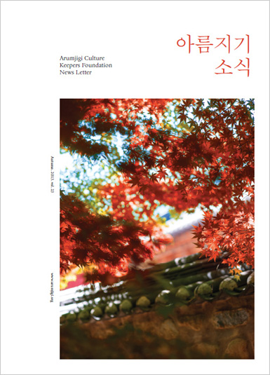

본문 컨텐츠 영역
Home > 아름지기 소식 > 소식지
소식지
아름지기는 유무형 문화유산이 현대 한국인의 의식주 생활에 올바르게 스며들어 확산되도록 노력합니다.
Arumjigi CultureKeepers FoundationNews Letter Summer. 2015. vol. 29
-
- 아름지기 공감
- 한국인에게 한식이 갖는 의학적 의미
- 아름지기 프로젝트
- <헤리티지 투모로우 프로젝트 5> 수상작 전시
- 아시아 공예 디자인 프로젝트
- 아름지기가 만난 사람들
- 이정용 (가나아트갤러리 대표)
- 아름지기 소식
- 아름지기 기금마련 바자
- <이상의 집> 기일 행사
- 아름지기 회원카드 발행
- K옥션 문화예술사랑 온라인경매
- 덕수궁 환경 가꾸기
- 구글 컬처럴 인스티튜트, 아름지기 소개
- 아름지기·까르띠에 MOU 체결
- 함양한옥 소식
- 아름지기 온지음 소식
- 양성원 첼리스트와 함께한 페스티벌 오원
- 아름지기 후원기업 소식
- 동화약품
- 아름지기가 제안하는 우리 멋
- 온지음 개발 한복 패브릭
Arumjigi CultureKeepers FoundationNews Letter Spring. 2015. vol. 28
-
- 아름지기 공감
- 한양도성과 도시 유산
- 아름지기 프로젝트
- 문화유산 안내판 개선사업
- 아름지기가 만난 사람들
- 정소영(정소영의 식기장 대표)
- 아름지기 소식
- 2014 기획전시 연계 강연
- <이상의 집> 문학 강연
- <헤리티지 투모로우 프로젝트 5> 워크샵
- 아름지기 회원의 밤
- 함양한옥 소식
- 온지음 소식
- 아름지기 후원기업 소식
- 호림박물관
- 아름지기가 제안하는 우리 멋
- 어만두 & 대구알젓김치
Arumjigi CultureKeepers FoundationNews Letter Autumn. 2014. vol. 27
-
- 아름지기 공감
- 나눔 정신을 통한 한국적 디자인
- 아름지기 프로젝트
- 2014 아름지기 기획전시 <소통하는 경계, 문門>
- 아름지기가 만난 사람들
- 포이어 프로덕션 대표 강낙현
- 아름지기 소식
- 아름지기 아카데미
- 돈암동 흥천사 정자나무 가꾸기
- 이상의 집, 이상 생일잔치
- 아름지기 사옥과 이상의 집
- 서울시 건축상 수상, 서울시 좋은 간판 공모전 수상
- 헤리티지 투모로우 프로젝트 5 개최
- 아름지기 후원기업 소식
- 이니스프리
- 아름지기가 제안하는 우리 멋
- 취병
Arumjigi CultureKeepers FoundationNews Letter Summer. 2014. vol. 26
-
- 아름지기 공감
- 끊임없는 변화의 소용돌이 속에 서 있는
우리 전통공예는 - 아름지기 프로젝트
- 덕수궁 환경 가꾸기
- 아름지기가 만난 사람들
- 정인서(크리에이티비아 대표)
- 아름지기 소식
- 2014 아름지기 기금 마련 바자
- 2014 아름지기 아카데미
- 2014 <세계 문화 유산 답사>
- <이상의 집> 문학 강연
- 프랑스 비단 꽃 장인의 채화 시연
- 함양한옥 소식
- 아름지기 후원기업 소식
- 사회복지법인 인클로버재단
- 아름지기가 제안하는 우리 멋
- 아기 돌복
Arumjigi CultureKeepers FoundationNews Letter Spring. 2014. vol. 25
-
- 아름지기 공감
- 신라, 뉴욕을 매혹하다
- 아름지기 프로젝트
- 2014 이상의 집,
과거와 현재를 잇는 문화 소통의 공간 - 아름지기가 만난 사람들
- 김현정, 이소영 인시즌 공동대표
- 아름지기 소식
- 2014 아름지기 바자
- 궁궐 환경 가꾸기
- 2014 아름지기 대중 강연
- <헤리티지 투모로우 프로젝트 4> 수상작 전시
- 보령 정자나무 가꾸기
- 아름지기 한식수저세트 개발
- 함양한옥 소식
- 아름지기 후원기업 소식
- SG한국삼공
- 아름지기가 제안하는 우리 멋
- 보리수단과 꽃지지미
Arumjigi CultureKeepers FoundationNews Letter Winter. 2014. vol. 24
-
- 아름지기 공감
- 한국적 리더십, 선비 정신
- 아름지기 프로젝트
- 2013 아름지기 기획전시 <포, 선비 정신을 입다>
- 아름지기가 만난 사람들
- 김김아린(비마이게스트 대표)
- 아름지기 소식
- 2013 기획전시 연계 강연
- 아름지기 헤리티지 투모로우 프로젝트 4
- 2014 삼성 & 효성 캘린더 디자인 컨설팅
- 함양한옥 소식
- 아름지기 후원기업 소식
- 세종솔로이스츠
- 아름지기가 제안하는 우리 멋
- 세조대細條帶

Arumjigi CultureKeepers FoundationNews Letter Autumn. 2014. vol. 23
-
- 아름지기 공감
- 기록하지 않으면 역사가 아니다
- 아름지기 프로젝트
- 통의동에 자리 잡은 아름지기의 새로운 집
- 아름지기가 만난 사람들
- 김기호 금박 이수자
- 아름지기 소식
- 2013 아름지기 기획전시
- 아름지기 대중 강연
- 문화재청, (주)이니스프리와 MOU 체결
- 함양한옥 소식
- 아름지기 후원기업 소식
- 국순당
- 아름지기가 제안하는 우리 멋
- 콩나물 겨자 냉채 & 콩비지 밥
Arumjigi CultureKeepers FoundationNews Letter Summer. 2014. vol. 22
-
- 아름지기 공감
- 아름지기의 새 터 - 서북촌의 역사
- 아름지기 프로젝트
- 제4회 <아름지기 기금 마련 바자>
- 아름지기가 만난 사람들
- 움직임(Umzikim)
- 아름지기 소식
- 아름지기 사옥 이전
- 프랑크푸르트 응용미술관 전시 참여
- 창덕궁 가정당 케이터링 컨설팅
- 서울 시민청 한식혼례 1호 결혼식
- 서울디자인재단과 MOU 체결
- 아름지기 후원기업 소식
- 포스코미술관
- 아름지기가 제안하는 우리 멋
- 안국동 한옥 화초담